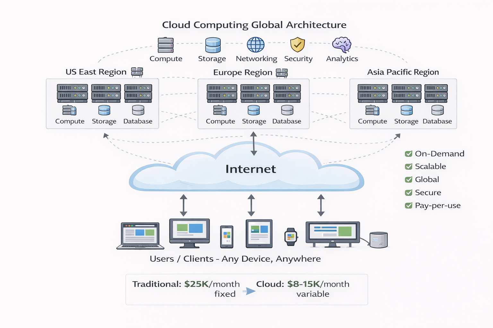

Cloud Computing Service Providers (CCSPs) deliver virtualized computing resources over the
internet, enabling organizations to access enterprise-grade infrastructure without capital
investment in physical hardware.
Definition and Core Concept
A Cloud Computing Service Provider is a company that offers on-demand access to computing
resources—including servers, storage, databases, networking, software, and analytics—over the
internet on a pay-per-use or subscription basis.
Rather than organizations purchasing and managing their own IT infrastructure (CapEx model), they
rent resources from CCSPs (OpEx model), gaining immediate access to scalable, globally
distributed, secure infrastructure.

Figure 6: Cloud Computing Architecture - Global infrastructure
accessible via internet
Key Characteristics of Cloud Services
| Characteristic |
Description |
Business Impact |
| On-Demand Self-Service |
Provision resources instantly without human interaction |
Reduce deployment time from weeks to minutes |
| Broad Network Access |
Access from any device over standard networks |
Enable remote work, global teams, mobile access |
| Resource Pooling |
Multi-tenant infrastructure shared across customers |
Lower costs through economies of scale |
| Rapid Elasticity |
Scale resources up or down automatically |
Match capacity to demand, eliminate waste |
| Measured Service |
Pay only for resources consumed |
Transparent costs, optimization opportunities |
Major Cloud Providers
Amazon Web Services (AWS)
- Market Position: Largest cloud provider, approximately 32% global market
share
- Launched: 2006 (first major public cloud)
- Regions: 33 geographic regions, 105 availability zones worldwide
- Services: 200+ services covering compute, storage, databases, machine
learning, IoT, analytics
- Strengths: Largest service portfolio, mature ecosystem, extensive partner
network, dominant in startups and enterprises
- Popular Services: EC2 (compute), S3 (storage), RDS (databases), Lambda
(serverless)
Microsoft Azure
- Market Position: Second largest, approximately 23% market share
- Launched: 2010
- Regions: 60+ regions globally
- Strengths: Tight integration with Microsoft products (Windows Server,
Active Directory, Office 365), strong enterprise relationships, hybrid cloud capabilities
- Target Market: Enterprises heavily invested in Microsoft ecosystem
- Popular Services: Virtual Machines, Azure SQL Database, Azure Active
Directory, Azure DevOps
Google Cloud Platform (GCP)
- Market Position: Third largest, approximately 11% market share
- Launched: 2008
- Regions: 40+ regions worldwide
- Strengths: Advanced data analytics, machine learning (TensorFlow),
Kubernetes expertise (originated at Google), global network infrastructure
- Target Market: Data-intensive workloads, AI/ML applications, containerized
applications
- Popular Services: Compute Engine, BigQuery (analytics), Cloud Storage,
Google Kubernetes Engine
Other Notable Providers
- IBM Cloud: Enterprise focus, mainframe integration, hybrid cloud (Red Hat
acquisition)
- Oracle Cloud: Database-centric, strong in enterprise applications (ERP,
CRM)
- Alibaba Cloud: Dominant in Asia-Pacific region, strong in China market
Cloud Service Models
Cloud providers offer different levels of abstraction and management responsibility:
Infrastructure as a Service (IaaS)
Provider manages: Physical hardware, virtualization, networking infrastructure
Customer manages: Operating systems, middleware, runtime, applications, data
Use cases: Lift-and-shift migrations, custom application hosting, full control requirements
Examples: AWS EC2, Azure Virtual Machines, Google Compute Engine
Platform as a Service (PaaS)
Provider manages: Infrastructure, operating systems, runtime environments
Customer manages: Applications and data
Use cases: Application development without infrastructure management
Examples: AWS Elastic Beanstalk, Azure App Service, Google App Engine
Software as a Service (SaaS)
Provider manages: Everything - entire application stack
Customer manages: User access, configuration, data
Use cases: Ready-to-use applications
Examples: Salesforce, Office 365, Gmail, Dropbox
| Model |
Control Level |
Management Effort |
Flexibility |
| IaaS |
Highest |
Highest |
Maximum |
| PaaS |
Medium |
Medium |
Moderate |
| SaaS |
Lowest |
Lowest |
Limited |
Cloud Deployment Models
Public Cloud
Infrastructure shared across multiple organizations, owned and operated by cloud provider.
Advantages: Lowest cost, no maintenance, infinite scalability, latest technology
Considerations: Data stored off-premises, shared infrastructure, internet dependency
Private Cloud
Dedicated infrastructure for single organization, can be on-premises or hosted.
Advantages: Maximum control, enhanced security, regulatory compliance, predictable performance
Considerations: Higher costs, organization manages infrastructure, limited scalability
Hybrid Cloud
Combination of public and private clouds with orchestration between them.
Advantages: Flexibility, keep sensitive data on-premises, burst to public cloud for peak demand,
gradual cloud migration
Use cases: Regulated industries, disaster recovery, cloud bursting
Benefits of Cloud Computing
For Businesses
- Reduced Time to Market: Deploy applications in minutes instead of months
- Global Reach: Deploy infrastructure worldwide in multiple regions instantly
- Focus on Core Business: Eliminate infrastructure management, redirect
resources to product development
- Innovation Enablement: Experiment with new technologies (AI, IoT, big data)
without large investments
- Business Continuity: Built-in redundancy, automated backups, disaster
recovery capabilities
- Competitive Advantage: Access enterprise-grade infrastructure previously
available only to large corporations
For IT Teams
- Automation: Infrastructure as Code (IaC) enables repeatable,
version-controlled deployments
- Monitoring and Insights: Built-in tools for performance monitoring, cost
tracking, security analysis
- Security: Provider-managed security at physical, network, and platform
levels; compliance certifications
- DevOps Enablement: CI/CD pipelines, containerization, microservices
architectures
- Skill Development: Exposure to cutting-edge technologies and industry best
practices
Cloud Adoption Drivers
Organizations migrate to cloud for several strategic reasons:
- Digital Transformation: Modernize legacy applications, adopt new
architectures (microservices, serverless)
- Cost Optimization: Replace CapEx with OpEx, eliminate waste through
right-sizing
- Scalability Requirements: Handle unpredictable traffic patterns, seasonal
demand
- Geographic Expansion: Deploy infrastructure in new markets without physical
presence
- Disaster Recovery: Affordable, reliable backup and recovery solutions
- Mergers and Acquisitions: Quickly integrate acquired companies' IT systems
- Competitive Pressure: Match competitors' speed and capabilities
💡 Real-World Example: Netflix migrated entirely to AWS to handle massive
global scale (200+ million subscribers, billions of hours streamed). Traditional
infrastructure couldn't support their growth rate or global expansion. Cloud enables instant
capacity for new shows, geographic scaling for international markets, and cost-effective
experimentation with new features.
Cloud Provider Selection Criteria
When choosing a cloud provider, organizations evaluate:
| Criteria |
Considerations |
| Service Portfolio |
Does provider offer required services? (databases, AI/ML, IoT) |
| Geographic Coverage |
Regions in target markets? Data sovereignty requirements? |
| Pricing Model |
Transparent pricing? Cost optimization tools? Discounts? |
| Existing Investments |
Integration with current tools? (Microsoft shops → Azure) |
| Compliance |
Certifications for industry (HIPAA, PCI-DSS, SOC 2)? |
| Support Options |
24/7 support? Enterprise support plans? SLAs? |
| Ecosystem |
Partner network? Training resources? Community? |
| Migration Tools |
Tools to move workloads from on-premises? |